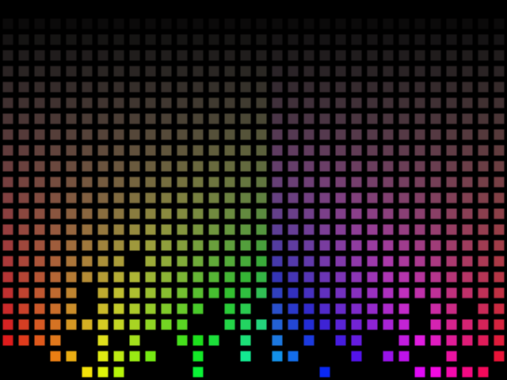

Digital flames
Repository: Digital flame

This was a random digital flame animation thing. Originally it was made in Processing in 2012, and ported to p5.js in 2026.
Inspired by some speakers. I can’t believe I watched a random Ashens video at 6 AM, couldn’t bloody sleep, so I thought “dammit, I’m going to bash out some Processing code”. Well, here is it anyway!
This is available under the MIT licence but I don’t really care if you take a looksie and learn from this.
See the p5.js version in action at OpenProcessing!